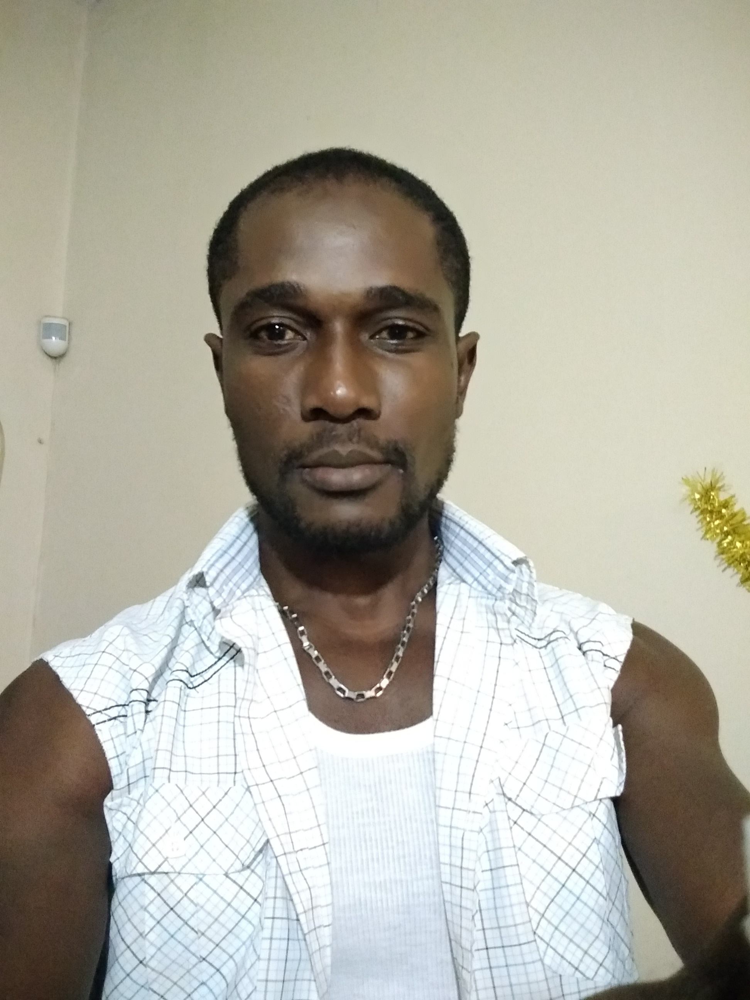

CURRICULUM VITAE
Datos Personales

- Apellido : Joseph
- Nombre : Murat
- Fecha de Nac. : 11/06/1987
- Lugar: Leogane
- Nacionalidad: Haitiano
- DNI : 95080487
- CUIL : 20-95080487-5
- Domicilio : La Rioja, Capital
- Telefono : 3804-972178
- Email : muraldine@gmail.com
- Estado Civil : Casado
- Hijo/as : 2
Formacion Academica
- Estudios Segundario Completos
Estudios Universitarios
- Ingenerias en Sistemas de Informacion
- Tecnicatura En Informatica
Experiencias Laborales
- Supervisor Informático en el FAMILY NET
- Administrador de Red en la Escuela Comercio n°1
- Profesor ayudante y particular de francés en la UNLAR. (Escuela de Lengua)
- Mantenimiento e Instalación de pago fácil
Conocimientos lingüísticos (Idioma)
- Francés ------ idioma oficial (hablar y escribir)
- Creole Haitiano ----- idioma maternal
- Castellano Argentino ------ nivel avanzado hablado y escrito
- Ingles nivel intermedio ----- hablado y escrito